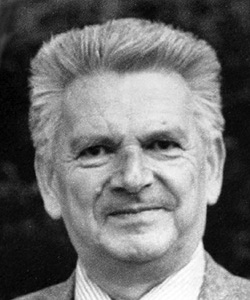

René Thom (2 septembre 1923 [Montbéliard] - 25 octobre 2002 [Bures-sur-Yvette])
René Thom est né le 2 septembre 1923 à Montbéliard (dans le Doubs). Très jeune, il se révèle un très brillant élève, mais sa scolarité est interrompue par la Seconde Guerre Mondiale. Pendant l'invasion allemande, il se réfugie en Suisse, avant, à la fin des combats, de se retrouver à Lyon puis à Paris pour préparer le concours d'entrée à l'École Normale Supérieure. Après un échec en 1942, il le réussit en 1943.
C'est la guerre en France, mais les mathématiques sont en plein renouveau. L'esprit bourbakiste souffle, et René Thom rencontre celui qui deviendra son maître, Henri Cartan. Il le suit à Strasbourg en 1946 pour préparer sa thèse qu'il soutient en 1951. Ses premiers travaux ont pour objet la théorie de Morse. Son intérêt se porte également sur la topologie différentielle, l’étude des propriétés globales d’espaces localement modelés sur $\mathbb R^n$ (variétés) en s’appuyant sur le calcul différentiel. Il y invente de nouveaux outils, notamment le cobordisme qui montre comment construire l'algèbre graduée des classes d'équivalence des variétés différentiables, compactes, orientées, de dimension $n$ pouvant servir de bord à une même variété de dimension $n + 1.$ Il reçoit pour ces travaux la médaille Fields en 1958. Modeste, Thom dira toujours qu'il ne la méritait pas !
Après sa soutenance de thèse, René Thom enseigne deux ans aux États-Unis, puis à Grenoble et à Strasbourg, avant de rejoindre en 1965 l'Institut des Hautes Études Scientifiques où il fut professeur permanent jusqu'en 1988. Les années 1960 marquent un tournant dans sa carrière. Il aborde alors des notions plus générales, et ce qui le conduit à développer la théorie des catastrophes dans son ouvrage Stabilité structurelle et morphogénèse publié en 1972.
La théorie des catastrophes est née de l’intérêt de Thom pour le problème des singularités génériques d’une application à partir duquel il a cherché d’éventuelles applications physiques, notamment optiques : la déformation des caustiques, courbes lumineuses obtenues à partir de rayons émis à une distance infinie. Il précise ainsi le terme de « catastrophe » : « n’importe quelle discontinuité dans les phénomènes est une catastrophe. Le bord de cette table, là où le bois devient de l’air : c’est une surface de séparation, c’est un lieu de catastrophe ». Une catastrophe est ainsi un changement qualitatif sur fond continu. La théorie comptera sept catastrophes élémentaires : le pli, la fronce, la queue d’aronde, le papillon, et les trois ombilics elliptique, parabolique, hyperbolique.
Scientifiques, philosophes et artistes se pencheront beaucoup sur cette théorie. Ainsi, Christopher Zeeman proposera par exemple des modèles explicatifs pour l’agressivité du chien et les krachs boursiers. Jean Petitot proposera dans Morphogenèse du sens des prolongements à partir de l'esthétique transcendantale kantienne et de la phénoménologie husserlienne. Salvador Dali sera si séduit qu'en 1983 il consacrera une toile en hommage au mathématicien.
Par ailleurs, en introduisant les notions de saillance — formes individuées dans un espace euclidien, topologiquement disjointes — et de prégnance — entités quant à elles non localisées, qui investissent des saillances — Thom propose des explications pour la géologie, la biologie, l’épigenèse, la morphogenèse (étude de la naissance et du changement des formes), l’épidémiologie (« La Transcendance démembrée »), l’art (« Local et global dans l’œuvre d’art ») et même le langage (sémantique, catégories logiques).
De l’aveu même de Thom, la théorie des catastrophes étant une théorie qualitative et non quantitative, elle n’a pu avoir le succès escompté, notamment en raison de l’absence de test expérimental (Prédire n’est pas expliquer). Il militera à cet égard pour une science théorique se focalisant sur l’intelligibilité des modèles face à la trop grande importance prise par l’expérimentation et la prédiction.
René Thom a également entrepris une relecture topologique de la philosophie aristotélicienne. Il trouve en Aristote un penseur ayant réalisé son rêve de partir d’une intuition du continu, sans aucun appel à la générativité du nombre. Pour ce faire, il a pu dialoguer avec le philosophe Bruno Pinchard, dans son Esquisse de sémiophysique (« Physique du sens »). Tous ces travaux sont autant d’exemples de ce que Thom appelait l’Apologie du logos, étude des aspects trop peu approfondis du Lógos, source du discursif autant que du mathématique, en réponse à ceux qu’il appelait les apologues du chaos.
Il décède le 25 octobre 2002.
Cette biographie a été rédigée avec l'aide précieuse de Léo Perez.